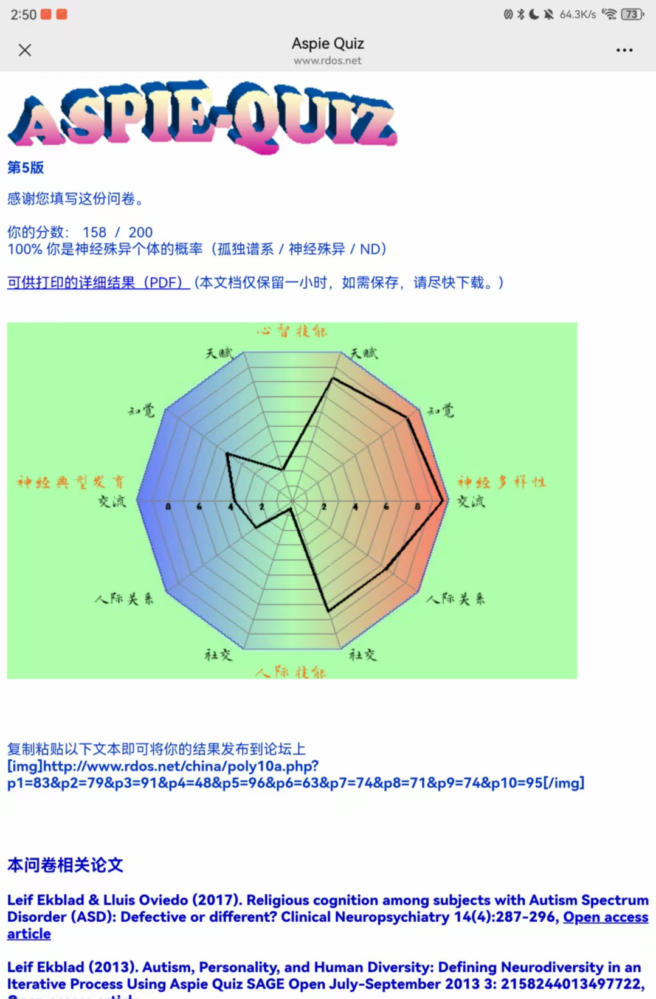
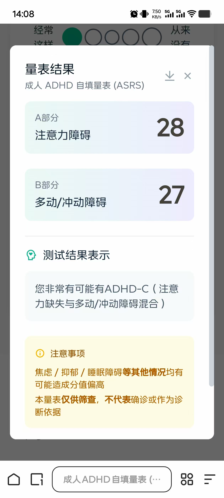
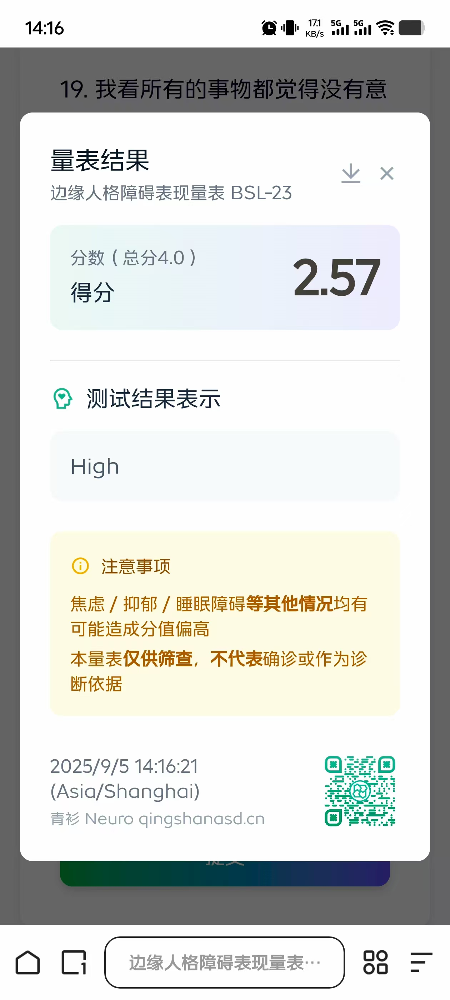
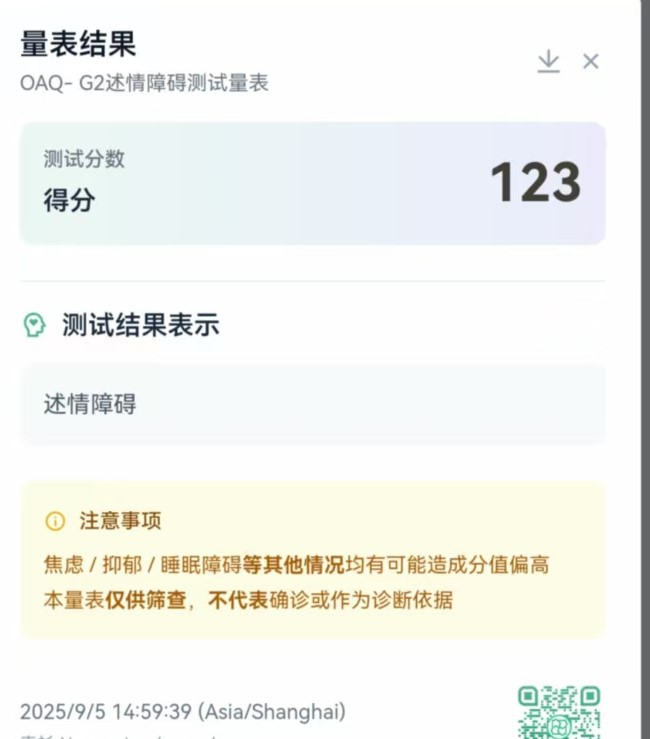

第一周总结
很累啊

9.1-9.5 周一没课，周二周五满课很忙，周三周四课不多还好。特别是周二和周五的晚修，也就是我们导师的课，要去本部上，来回通勤三个小时，加上各种等待，转乘的时间，基本上一下午带一晚上就浪费了。其他课除水课之外感觉都挺难的，与数学结合紧密，其正是我的弱项。
最重要的一件事——基本确定我是ADHD，或许还有点ASD。这至少可以给我过去的人生一个阶段性的总结，下一个关键的阶段是去医院做诊断，拿到最后的诊断书。




还结识了一位跑友，有时会在晚上八点左右一起跑步。
9月7日 去长楹天街逛了逛，感觉挺大挺繁华，但没什么特别突出的，感觉这种商业复合体都是一个模子里刻出来的。不过还没逛完，特别是HUAWEI和DJI的店我还没去。
9月8日 最忙的一天。先是去本部交回执单，结果只用扫码填表就行，也不收纸质回执单。等我回到学校后又通知线上填表就行，纸质回执单在管庄交就行。我白跑了三小时，地铁还没座位，累的要死。下午去销卡，几个地方来回捯饬。第一个地方不办业务；第二个地方说不是本地的卡要去另一个地方，最后那家说要先解绑和约。最后还是要给移动打电话，说是要回天津解绑副卡、交违约金什么的。到最后也只是解绑了副卡，销户还是全程在手机上操作的，只与什么违约金、回天津基本没有提到。我真服了，这就是移动的办事效率，虽然其他几家也没好到哪儿去。不过以上两件事中有很多是属于信息差造成的麻烦，但由于我情绪不好，就全怪外部力量了。